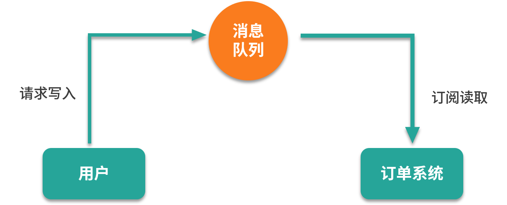
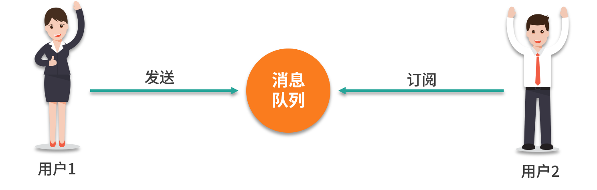
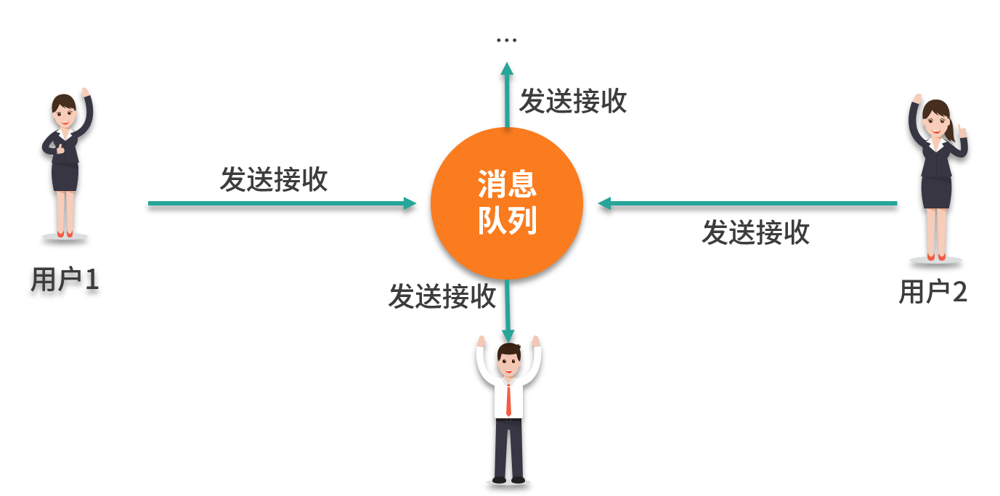
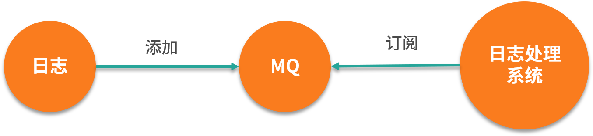
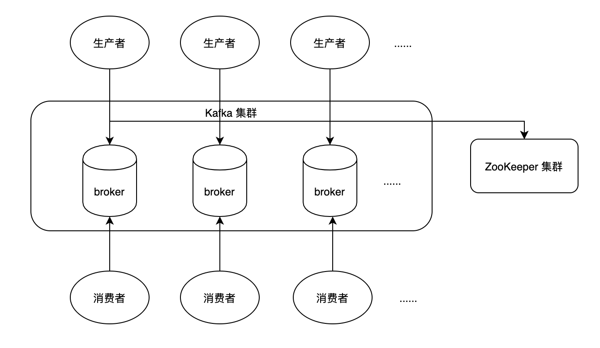

在第 10 课时中讲过“手写消息队列”，当时粗略的讲了 Java API 中使用 Queue 实现自定义消息队列，以及使用 Delayed 实现延迟队列的示例；同时还讲了 RabbitMQ 中的一些基础概念。本课时我们将会更加深入的讲解 MQ（Message Queue，消息队列）中间件，以及这些热门中间件的具体使用。
我们本课时的面试题是，MQ 常见的使用场景有哪些？你都用过哪些 MQ 中间件？
典型回答
在介绍 MQ 的使用场景之前，先来回忆一下 MQ 的作用。MQ 可以用来实现削峰填谷，也就是使用它可以解决短时间内爆发式的请求任务，在不使用 MQ 的情况下会导致服务处理不过来，出现应用程序假死的情况，而使用了 MQ 之后可以把这些请求先暂存到消息队列中，然后进行排队执行，那么就不会出现应用程序假死的情况了，所以它的第一个应用就是商品秒杀以及产品抢购等使用场景，如下图所示：

使用 MQ 实现消息通讯
使用 MQ 可以作为消息通讯的实现手段，利用它可以实现点对点的通讯或者多对多的聊天室功能。
点对点的消息通讯如下图所示：

多对多的消息通讯如下图所示：

使用 MQ 实现日志系统
可使用 MQ 实现对日志的采集和转发，比如有多个日志写入到程序中，然后把日志添加到 MQ，紧接着由日志处理系统订阅 MQ，最后 MQ 将消息接收并转发给日志处理系统，这样就完成了日志的分析和保存功能，如下图所示：

常用的 MQ 中间件有 RabbitMQ、Kafka 和 Redis 等，其中 Redis 属于轻量级的消息队列，而 RabbitMQ、Kafka 属于比较成熟且比较稳定和高效的 MQ 中间件。
考点分析
MQ 属于中高级或优秀的程序员必备的技能，对于 MQ 中间件掌握的数量则是你技术广度和编程经验的直接体现信息之一。值得庆幸的是，关于 MQ 中间件的实现原理和使用方式都比较类似，因此如果开发者掌握一项 MQ 中间件再去熟悉其他 MQ 中间件时，会非常的容易。
MQ 相关的面试题还有这些：
- MQ 的特点是什么？引入 MQ 中间件会带来哪些问题？
- 常见的 MQ 中间件的优缺点分析。
知识扩展
MQ 的特点及注意事项
MQ 具有以下 5 个特点。
先进先出：消息队列的顺序一般在入列时就基本确定了，最先到达消息队列的信息，一般情况下也会先转发给订阅的消费者，我们把这种实现了先进先出的数据结构称之为队列。
发布、订阅工作模式：生产者也就是消息的创建者，负责创建和推送数据到消息服务器；消费者也就是消息的接收方，用于处理数据和确认消息的消费；消息队列也是 MQ 服务器中最重要的组成元素之一，它负责消息的存储，这三者是 MQ 中的三个重要角色。而它们之间的消息传递与转发都是通过发布以及订阅的工作模式来进行的，即生产者把消息推送到消息队列，消费者订阅到相关的消息后进行消费，在消息非阻塞的情况下，此模式基本可以实现同步操作的效果。并且此种工作模式会把请求的压力转移给 MQ 服务器，以减少了应用服务器本身的并发压力。
持久化：持久化是把消息从内存存储到磁盘的过程，并且在服务器重启或者发生宕机的情况下，重新启动服务器之后是保证数据不会丢失的一种手段，也是目前主流 MQ 中间件都会提供的重要功能。
分布式：MQ 的一个主要特性就是要应对大流量、大数据的高并发环境，一个单体的 MQ 服务器是很难应对这种高并发的压力的，所以 MQ 服务器都会支持分布式应用的部署，以分摊和降低高并发对 MQ 系统的冲击。
消息确认：消息消费确认是程序稳定性和安全性的一个重要考核指标，假如消费者在拿到消息之后突然宕机了，那么 MQ 服务器会误认为此消息已经被消费者消费了，从而造成消息丢失的问题，而目前市面上的主流
MQ 都实现了消息确认的功能，保证了消息不会丢失，从而保证了系统的稳定性。
引入 MQ 系统会带来的问题
任何系统的引入都是有两面性的，MQ 也不例外，在引入 MQ 之后，可能会带来以下两个问题。
- 增加了系统的运行风险：引入 MQ 系统，则意味着新增了一套系统，并且其他的业务系统会对 MQ 系统进行深度依赖，系统部署的越多则意味着发生故障的可能性就越大，如果 MQ 系统挂掉的话可能会导致整个业务系统瘫痪。
- 增加了系统的复杂度：引入 MQ 系统后，需要考虑消息丢失、消息重复消费、消息的顺序消费等问题，同时还需要引入新的客户端来处理 MQ 的业务，增加了编程的运维门槛，增加了系统的复杂性。
使用 MQ 需要注意的问题，不要过度依赖 MQ，比如发送短信验证码或邮件等功能，这种低频但有可能比较耗时的功能可以使用多线程异步处理即可，不用任何的功能都依赖 MQ 中间件来完成，但像秒杀抢购可能会导致超卖（也就是把货卖多了，库存变成负数了）等短时间内高并发的请求，此时建议使用 MQ 中间件。
常用的 MQ 中间件
常用的 MQ 中间件有 Redis、RabbitMQ、Kafka，下来我们分别来看看各自的作用。
Redis 轻量级的消息中间件
Redis 是一个高效的内存性数据库中间件，但使用 Redis 也可以实现消息队列的功能。
早期的 Redis（Redis 5.0 之前）是不支持消息确认的，那时候我们可以通过 List 数据类型的 lpush 和 rpop 方法来实现队列消息的存入和读取功能，或者使用 Redis 提供的发布订阅（pub/sub）功能来实现消息队列，但这种模式不支持持久化，List 虽然支持持久化但不能设置复杂的路由规则来匹配多个消息，并且他们二者都不支持消息消费确认。
于是在 Redis 5.0 之后提供了新的数据类型 Stream 解决了消息确认的问题，但它同样不能提供复杂的路由匹配规则，因此在业务不复杂的场景下可以尝试性的使用 Redis 提供的消息队列。
RabbitMQ
在第 10 课时中，我们对 RabbitMQ 有过初步的讲解，它是一个实现了标准的高级消息队列协议（AMQP，Advanced Message Queuing Protocol）的老牌开源消息中间件，最初起源于金融系统，后来被普遍应用在了其他分布式系统中，它支持集群部署，和多种客户端调用。
之前主要介绍了 RabbitMQ 的基础功能，本课时我们重点来看 RabbitMQ 集群相关的内容。
RabbitMQ 集群是由多个节点组成，但默认情况下每个节点并不是存储所有队列的完整拷贝，这是出于存储空间和性能的考虑，因为如果存储了队列的完整拷贝，那么就会有很多冗余的重复数据，并且在新增节点的情况下，不但没有新增存储空间，反而需要更大的空间来存储旧的数据；同样的道理，如果每个节点都保存了所有队列的完整信息，那么非查询操作的性能就会很慢，就会需要更多的网络带宽和磁盘负载来存储这些数据。
为了能兼顾性能和稳定性，RabbitMQ 集群的节点分为两种类型，即磁盘节点和内存节点，对于磁盘节点来说显然它的优势就是稳定，可以把相关数据保存下来，若 RabbitMQ 因为意外情况宕机，重启之后保证了数据不丢失；而内存节点的优势是快，因为是在内存中进行数据交换和操作，因此性能比磁盘节点要高出很多倍。
如果是单个 RabbitMQ 那么就必须要求是磁盘节点，否则当 RabbitMQ 服务器重启之后所有的数据都会丢失，这样显然是不能接受的。在 RabbitMQ 的集群中，至少需要一个磁盘节点，这样至少能保证集群数据的相对可靠性。
小贴士：对于 RabbitMQ 集群来说，我们启动集群节点的顺序应该是先启动磁盘节点再启动内存节点，而关闭的顺序正好和启动的顺序相反，不然可能会导致 RabbitMQ 集群启动失败或者是数据丢失等异常问题。
Kafka
Kafka 是 LinkedIn 公司开发的基于 ZooKeeper 的多分区、多副本的分布式消息系统，它于 2010 年贡献给了 Apache 基金会，并且成为了 Apache 的顶级开源项目。其中 ZooKeeper 的作用是用来为 Kafka 提供集群元数据管理以及节点的选举和发现等功能。
与 RabbitMQ 比较类似，一个典型的 Kafka 是由多个 Broker、多个生产者和消费者，以及 ZooKeeper 集群组成的，其中 Broker 可以理解为一个代理，Kafka 集群中的一台服务器称之为一个 Broker，其组成框架图如下所示：

Kafka VS RabbitMQ
Kafka（2.0.0）和 RabbitMQ（3.6.10）的区别主要体现在以下几点：
- Kafka 支持消息回溯，它可以根据 Offset（消息偏移量）、TimeStamp（时间戳）等维度进行消息回溯，而 RabbitMQ 并不支持消息回溯；
- Kafka 的消息消费是基于拉取数据的模式，也就是消费者主动向服务器端发送拉取消息请求，而 RabbitMQ 支持拉取数据模式和主动推送数据的模式，也就说 RabbitMQ 服务器会主动把消息推送给订阅的消费者；
- 在相同配置下，Kafka 的吞吐量通常会比 RabbitMQ 高一到两个级别，比如在单机模式下，RabbitMQ 的吞吐量大概是万级别的处理能力，而 Kafka 则可以到达十万甚至是百万的吞吐级别；
- Kafka 从 0.11 版本就开始支持幂等性了，当然所谓的幂等性指的是对单个生产者在单分区上的单会话的幂等操作，但对于全局幂等性则还需要结合业务来处理，比如，消费者在消费完一条消息之后没有来得及确认就发生异常了，等到恢复之后又得重新消费原来消费过的消息，类似这种情况，是无法在消息中间件层面来保证的，这个时候则需要引入更多的外部资源来保证全局幂等性，比如唯一的订单号、消费之前先做去重判断等；而 RabbitMQ 是没有幂等性功能支持的；
- RabbitMQ 支持多租户的功能，也就是常说的 Virtual Host（vhost），每一个 vhost 相当于一个独立的小型 RabbitMQ 服务器，它们拥有自己独立的交换器、消息队列及绑定关系等，并且拥有自己独立权限，而且多个 vhost 之间是绝对隔离的，但 Kafka 并不支持多租户的功能。
Kafka 和 RabbitMQ 都支持分布式集群部署，并且都支持数据持久化和消息消费确认等 MQ 的核心功能，对于 MQ 的选型要结合自己团队本身的情况，从性能、稳定性及二次开发的难易程度等维度来进行综合的考量并选择。
小结
本课时我们讲了 MQ 的常见使用场景，以及常见的 MQ 中间件（Redis、RabbitMQ、Kafka）及其优缺点分析；同时还了解了 MQ 的五大特点：先进先出、发布和订阅的模式、持久化、分布式和消息确认等；接着讲了 MQ 引入对系统可能带来的风险；最后讲了 MQ 在使用时需要注意的问题。希望本课时对你整体了解 MQ 系统有所帮助。